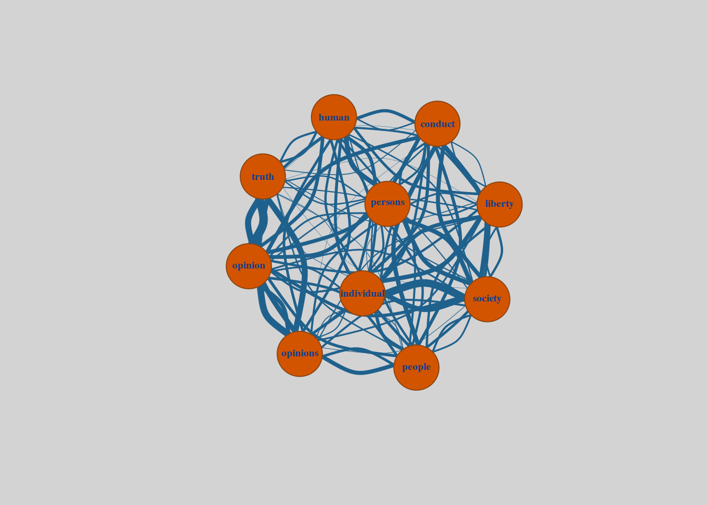

| Word | Frequency |
|---|---|
| opinion | 153 |
| society | 115 |
| human | 106 |
| opinions | 104 |
| people | 97 |
| truth | 96 |
| persons | 93 |
| liberty | 91 |
| conduct | 88 |
| individual | 88 |
The Shape of Ideas
Thematic analysis
Textual visualisation
Part 1 - Frequencies
I’ve been fascinated for a while now by the prospect that knowledge, concepts, and ideas might be represented as geometric forms. Put simply, I’ve felt drawn to the question, “What is the shape of an idea?” This might sound like an ambitious question to answer—and it’s fair to say that I’m not quite there yet. Still, it’s fertile ground for exploration. After all, we’re living in an age characterized by the proliferation of analytical techniques suited for just this kind of inquiry.
These methods are, admittedly, quite specialized, rooted in fields like quantitative linguistics and computer science. But thanks to these very tools, we now have accessible resources—like chatbots, text analysis libraries, and visualization software—that help us learn, experiment, and build on our understanding. And what is it that we should be doing with these tools, if not not satisfying our curiosity by answering ambitious questions?
We may not yet be able to literally “see” an idea’s shape, but we can get closer to it by uncovering patterns and connections in language that hint at the structure of thought itself. Starting with a straightforward approach like Term Frequency (TF) analysis, we can identify the most frequently occurring words and concepts in a text. This might seem simple, but it lays a foundation, showing us the key ideas that will pave the way for further exploration. From there, we can take it a step further, examining co-occurrences and visualising the relationships between words, slowly beginning to sketch the contours of an idea’s “shape” in language.
The Text
Here, I start with the text On Liberty by John Stuart Mill. A seminal work in political philosophy, On Liberty provides a framework for exploring the balance between state authority and individual freedoms. Mill argues for the importance of personal autonomy, emphasizing that individuals should be free to pursue their own paths, provided they do not harm others in the process. His work highlights the need for limits on societal and governmental control, advocating for the protection of individual rights as essential to a vibrant, progressive society.
To begin with, we need to load in the text.
Next, we need to break this text down into individual words, a process known as tokenization. We’ll also remove common words that don’t add much meaning, like “and” or “are.” After tokenizing the text words, and removing stopwords, we calculate Term Frequency by counting the occurrence of each word. See below, where the word frequencies have been calculated and then sorted, to show the top 10 words and their frequencies.
Alright, now we have a list of words and their frequencies. While these frequencies give us a sense of the text’s main content, they don’t really illustrate the relationships between concepts or the progression of ideas throughout the work. Some terms may need cleaning up (for instance, “opinion” vs. “opinions” or “persons” vs. “people”), but even that requires judgment about whether these variations carry different meanings or appear in distinct contexts. For now, we’ll work with the terms as they are and focus on visualizing the relationships between them.
Co-occurrence analysis
To visualize the relationships between our top 10 most frequent words, we’ll examine how they occur together within the text. This approach—called a co-occurrence analysis—will help reveal patterns and associations between terms.
First, we define a window of co-occurrence—in this case, 1—which essentially means we’re looking at pairs of consecutive words. Whenever two of these words appear side-by-side in the text, we count that as a co-occurrence (don’t forget, we’ve removed stopwords, so these words will co-occur more than you may think).
Note that this window choice of 1 could be whatever we want it to be. However, by keeping the window small for now we limit our focus to direct, immediate relationships rather than looser connections that might dilute the strength of association.
Below, we can see that of our top 10 most frequently occurring words, the 2 that appear together the most are opinion and truth, followed by society and individual. Immediately, this makes intuitive sense, afterall On Liberty is an exploration of the relationship between society and individuals, and explores how this is in part due to the nature of/ how they interact with truth and opinion
Below, we can see that among our top 10 most frequently occurring words, the pair that appears together most often is opinion and truth, followed by society and individual. This immediately aligns with the themes of On Liberty, which we already know to be an exploration of the relationship between society and individuals, and how these interactions are shaped by concepts of truth and opinion.
| Word 1 | Word 2 | Frequency |
|---|---|---|
| opinion | truth | 29 |
| society | individual | 26 |
| opinions | opinion | 23 |
| truth | opinion | 21 |
| truth | opinions | 20 |
| individual | society | 17 |
| opinions | truth | 17 |
| conduct | society | 16 |
| human | persons | 16 |
| individual | liberty | 15 |
So that’s quite satisfying, at least we know that a simple count of word frequencies and co-occurrences can get us some pretty representative information. This isn’t quite yet the shape of an idea though, we need a few more steps to visualise these relationships. The next step is to create a co-occurrence matrix.
Co-occurrence network graph
A co-occurrence matrix is a table that shows how often each word appears alongside every other word within a specified window of text. In this matrix, rows and columns represent words, and each cell contains the co-occurrence count for that word pair. For instance, if liberty and individual appear near each other 15 times, the matrix will show this count in the corresponding cell. This matrix provides a comprehensive view of all pairwise word relationships in the text, quantifying the connections between each word.
Once we have this co-occurrence matrix, we can take it a step further by translating it into a network graph. In the network graph, each word is represented as a node and the connections between them—based on their co-occurrence counts—are shown as edges. The weight of each edge (i.e., the thickness of the line connecting two words) reflects the frequency of co-occurrence.

Now we have a visual representation of the relationships between the top 10 words in John Stuart Mill’s On Liberty. Technically speaking, this is a relatively simple achievement, but it’s been a valuable exercise in setting up foundational concepts we’ll revisit later. Word frequency alone is a fairly basic approach, but it serves as a stepping stone toward more sophisticated methods like TF-IDF. Eventually, we’ll be extracting topics statistically, representing words as embeddings and performing more complex analyses, but for now, this is a useful start.

On Liberty has become, partly by chance and partly by choice, my go-to text for exploring text analysis projects. Even with these basic techniques, the key themes of the text are already beginning to emerge. The tension between society and the individual appears, in part, as a struggle over truth and opinion. While this may not be exactly what I meant by identifying the “shape of an idea,” it’s quite fitting and tells us something valuable about the shape of ideas—that they’re molded by the individuals who hold them and the world they inhabit.